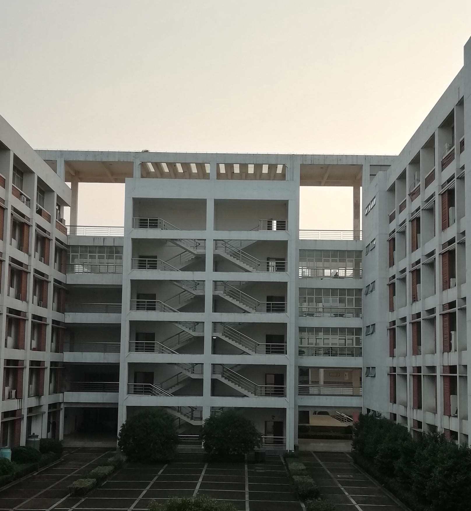
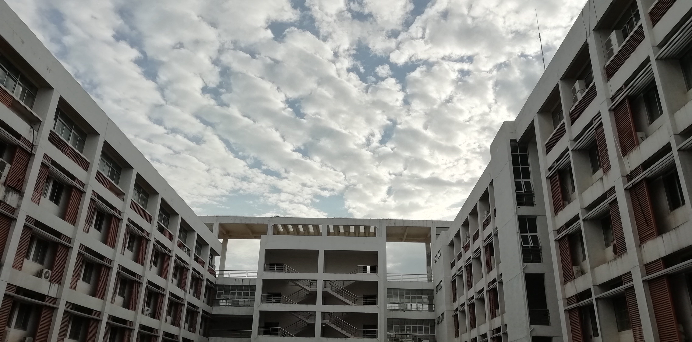

压不垮我的，终将使我更强大 -- 考研总结
2019考研路途终于走到了终点，尽头开遍了喜悦的鲜花。
初试 -- 沉下心来，方有洞天
在最初决定考研的时候，目标是西南交大，一是四川有亲戚，二是考研成功率更高；但在填写报考信息的前两天，临时决定报考华科，并且是难度最大的电力系，开始了人生中第一次豪赌。改目标的原因很多，主要有：一是得知高中室友有两人保研北大受到刺激；二是当时西南交大电路真题已经做完，复习状态削弱懈怠了很多，而距离初试还有两个多月，我很清楚以那种状态是不可能考得好的；最重要的原因是，心里有种强烈的想法，为什么不尽全力一次试试看呢，我似乎从来没有全力以赴过，高考那时也许行动上尽了全力，但心理上没有。
最后两个月的复习过程中，痛苦过，煎熬过，十算九错一度让我崩溃，此前我是不屑于计算的，认为思路才是王道。“现在都算不对，总不可能期望考试的时候再算对吧。”、“只有菜鸡才觉得这叫运算量。”我这样对自己说。事实证明，只有实实在在算过一遍才能悟出技巧。虽然考数学时运算还是出了问题，但已经得到了控制。
真正让人头大的是政治，考前背题背到想吐，没有别的办法，只能强迫自己背下去；一遍又一遍读那些根本无法理解的句子，区分一个个意思相近的名词。
 
复试 -- 不骄不躁，方得始终
华科的复试成绩占最终成绩的40%，非常重要，复试又分为笔试、英语测试、专业面试，按4:2:4计入复试成绩。初试成绩出来后，根据群里统计，我的电力系单方向排名为22，按照以往招生人数，这是无法进入电力系的，联系导师方面，导师都是表示名额已满。所以决定调剂，但问题是此时不确定要往那个方向调，复习也很盲目，电力电子、电磁场、电机学、自动控制理论课本都翻了翻，却都无法静下心来深入某一门课程。比初试更可怕的是不知道往哪个方向使劲。这里非常感谢一位朋友@月半王民，让我集中精力准备电分笔试。虽然不知道电分得了多少分，但从复试成绩来看，分数应该不低。
面试的时候，大脑和正常时候的反应不太相同，面试完就找不着北了，一直在回想面试的细节，越想越觉得凉了，很基本的电路理论没有答好，电机答得稀烂，自以为得意的Python编程因为缺乏解释可能被误解，综合下来，我想老师对我的评价大概会是：基础极其糟糕，编程一窍不通，自大不懂装懂，除了英语一无是处。
越想心里就越忐忑，复试出成绩那天下午，坐在电气大楼附近青年园的长椅上，周围的环境很雅致，林木稀疏排布，小路曲径通幽，不同的鸟唤声和它们翅膀拍打的声音此起彼伏；这些都不足以平复内心的焦灼和不安，一方面期待成绩快些公布，另一方面害怕所担心的事真的发生。待群里有人发了几张模糊的公示名单，大致扫了一下没有找到我的名字，口干舌燥走进电气大楼，就算被淘汰也要亲眼看到结果。复试成绩87.6，全日制学硕待录取；我反复确认这一行，生怕看错，确认了几次后，心里拧紧的什么东西渐渐松开了，最后呼出了一口气。
结语
考研一路走来，很多迷惘，很多汗水，很多个虫鸣的夜晚，很多个探头的朝阳。考研好比一场博弈，以时光为赌注，也像一次洗礼，除了获得能力的提升，还将锤炼出更强大的内心。
感谢我的家人，感谢那些以任何方式关心、鼓励、帮助过我的人。
附：复试经验 -- 给2020考华科的学弟学妹
今年考研落下帷幕，期间心态起伏，个中悲喜，各不相同，有人高分复试被刷，有人低分成功逆袭。写下这篇复试经验总结，如果能帮到学弟学妹，最好不过。
初试考完估分380+，查成绩后402，心想这就稳了，等群里统计结果，400分以上的有50多人，心态马上变了，有书读就行。今年分数爆炸的原因总结起来有三条：一是去年数学难，把很多人留到了今年二战；二是今年数学容易，总体分数上涨；三是电路极简单，简直不像华科的题。三条原因，两条与数学有关，其重要性可见一斑。
今年划线380，但实际上380-385只能参加非全日制的复试，与我同行的同学不幸恰在这一分数段，很是惋惜。
复试报名是从高分的同学开始，一个一个填，主要注意笔试科目和复试系所的选择，每个系按1：1.2人数进入复试，名额填满后不再接受后续填报，并且如果初试单方向排名在该系所的计划招生人数以内，不能调出到其他方向。
我初试报的电力系，复试笔试选的电分，调剂到应用电磁工程研究所。
最先开始的是笔试，电分今年的题似乎有点异样，个别题目和刺猬哥的电分序列上的题不太一样。个人认为复习好电分序列足以覆盖到同类型考题的90%。
接着是面试，今年电磁所的英语面试和专业面试同时进行，每人20分钟（第一第二名好像有30分钟），没有听力但是其他系所是有的，先是一个英文的自我介绍，然后老师针对自我介绍的内容提问。我说自己对数学和编程感兴趣，自学了Python，老师就让我描述Python作为脚本语言的特性，并谈了谈如何结合C和Python的优势。另一位老师则问我既然对数学感兴趣，为什么初试数学分不高——我的数学确实炸了，回答说发挥不好，所幸我的高数上下册都是90+，应该是打消了老师的疑虑，大家说这种话之前一定要打草稿（我好像没有打）。以上英语面试结束。
接着让我写一个小程序实现一个级数求和公式：\(\Sigma_{n＝1}^Na_nx^n\)，我一开始写的老师说性能不高，看看能不能提高计算效率，我有点慌，经过老师提示还是没写出来，但是最后说了一下思路。
我感觉到这里就是我复试被录取的全部原因了，后面表现得很烂，我觉得自己属于剑走偏锋，这里总结3条我的加分项：1. 英语口语贼好；2. 写程序时表现得很熟练；3. 听说长得帅有加分（手动划掉）。以上三条，皆需要一定的功底，万万不可轻易模仿。
接下来电机老师问了几个问题：简述感应电机和同步电机的特点，异同；感应电机的机械特性是什么；机械特性曲线是怎样的。我错把机械特性弄成了转速特性，这是我面试后担心的一点。
可能是看我基础不太行，问我更基础的电路题：RL串联电路，0时刻合上直流电源，画出电流波形；把电源换成正弦交流呢？再把电感换成电容呢？我当时只答对了第一个和第三个问题，第二个犯了错误，一直在纠结初相位问题，但老师关心的是波形幅值的变化趋势，我迟迟答不出来，似乎因为时间快没了，几个老师的声音同时响起，我最后竟犯了个严重错误，说最终幅值由U/R决定（应该是U/Z）。面试就这样结束了。
我曾一度担心表现得像是没有丝毫专业基础而被刷，后来成绩公布时复试分数还挺高。复试三个环节，笔试是唯一有掌控感的，面试老师看重的是思路。
多说一句，华科电气除了5个传统电气工程二级学科，还有其他3个学科交叉比较多的研究所，因此初试填报的方向往往没用，比如我现在的导师就是电机电器方向的。
最后祝20的学弟学妹考研成功。